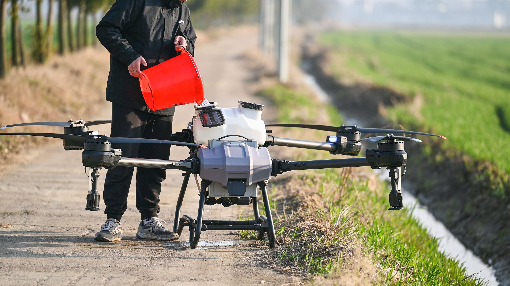

01
Agricultural Data
Collecting and preserving reliable agricultural information for informed decision-making.
→DATA • PEOPLE • SUSTAINABILITY
Reliable agricultural data, practical insights, and education for smarter farming and sustainable food systems.
SOIL MOISTURE
WELCOME TO AFAR DATA FARMS
Afar Data Farms is a data-driven agricultural brand focused on preserving agricultural knowledge, supporting informed decision-making, and building sustainable systems for the future of food.
→ Learn More About Our MissionOUR FOCUS
We combine agriculture, data, research, and education to support better decisions and sustainable growth.
Collecting and preserving reliable agricultural information for informed decision-making.
→Turning agricultural data and research into practical insights and recommendations.
→Making agricultural knowledge clear, practical, accessible, and useful to farmers.
→Supporting farmers and communities with knowledge that encourages long-term sustainable growth.
→
WHO WE ARE
Afar Data Farms operates at the intersection of agriculture, data, and education. We preserve agricultural knowledge and transform reliable information into practical insights that support better decisions.
By working with farmers, agribusinesses, and communities, we are building systems designed to protect knowledge, strengthen agriculture, and cultivate a more sustainable future.
Stewardship
Integrity
Innovation
DATA & RESEARCH
Agricultural information becomes more valuable when people can understand and apply it. Afar Data Farms uses data, research, and practical knowledge to support informed agricultural decisions.
Explore Our Research →YIELD FORECAST
SOIL HEALTH
Supporting informed land-management decisions.
CLIMATE INSIGHTS
HOW WE WORK
We turn agricultural information into knowledge that farmers, agribusinesses, and communities can understand and use.
Gather reliable agricultural data, research, field observations, and knowledge from relevant sources.
Organize and interpret information to reveal useful agricultural patterns, challenges, and insights.
Transform knowledge into practical information that supports better decisions and sustainable growth.
COMMUNITY & IMPACT
Preserving agricultural knowledge today helps communities make better decisions tomorrow.
WHY IT MATTERS
Afar Data Farms exists to educate, support, and empower farmers and communities by improving access to agricultural information.
Through knowledge preservation, research, and responsible use of data, we aim to contribute to stronger agricultural systems that can sustain future generations.
Protecting agricultural knowledge so valuable insights are not lost.
Making information accessible for better agricultural decisions.
Encouraging responsible systems designed for long-term growth.
EDUCATION & RESOURCES
Explore practical agricultural knowledge, research insights, and educational resources designed to support informed decisions.
 DATA
DATA
Explore how agricultural information can support smarter and more informed farming decisions.
Read Article → SUSTAINABILITY
SUSTAINABILITY
Understanding environmental information can help agricultural communities plan more responsibly for the future.
Read Article → EDUCATION
EDUCATION
Why protecting and sharing agricultural knowledge matters for farmers, communities, and future generations.
Read Article →THE FUTURE STARTS HERE
Building a future where better agricultural information supports better decisions, stronger communities, and sustainable food systems.
Work With Afar →